CARDMASTERS CONFLICT
by webrunner
Instructions
by HailSpork and webrunner
1. Introduction
2. Getting
Started
2.1. Quick-Start for Magic Players
2.2. The Chat Room
3. Decks and Points
3.1. Deck Management
3.2. Points
3.3. Trading
3.4. Newbies' Guide to
Deckbuilding
4. The Cards
4.1. Speed
4.2. The Monsters
4.3. The Effects
4.4. The Spells
4.5. Locations
4.5. Modifiers
5. Playing the Game
5.1. The Playing Field
5.2. The Draw Phase
5.3. The Sacrifice Phase
5.4. The Play Phase
5.5. The Attack Phase
5.6. The Defense Phase
5.7. The Attack Resolution
6. Victory
7. Chat
Commands
8. Avatars
9. Glossary
9.1 Status Symbols
1. Introduction by Webrunner
Cardmasters Conflict is a
Java-based Collectable Card Game. The game is designed to
automate every
aspect not requiring user choice. Cards have special effects,
rarity, and
everything you would expect out of your average physical card game.
All
commands are done through the bot. This guide explains how to play the
game.
2. Getting Started
For those of you who have
played Magic, there is a quick-start guide here.
Alright, the first
thing you need to do is pick up a starter deck from here. Just
follow the instructions, including an email confirmation.
You have your
choice of three pre-built starter decks, one for each color. Each one is about
50 cards with a nice spread of mana, commons, uncommons, and even a few rares.
If you can't decide which deck to start with, just remember that you can find
all the cards in booster packs or even purchase extra starter decks.
Your new
account will not only come with a starter deck, but also 1000 points to
spend.
2.2. The Chat Room
When you log in and
click on the "Play CMC Now" button, you will be taken to the chat room, or
Matchmaker. This allows you to chat with other users, play with other users,
and trade with other users. At the top are four buttons, which switch your mode.
The four modes are Play which allows you to challenge other users in Play, Trade
which allows you to trade with other users in that mode, Chat and Away - both in
which you cannot play or trade.
Each player's box includes their Avatar (see section on avatars), their wins and
losses, their mode icon, and other miscelannious icons.
If you want to challenge a user, make sure that you are in the same mode (The OK! icon should indicate
this) and then click on their info box. If they then click on your info box, the game will automatically
start.
Chat Room Icons: These are the icons that appear in the Matchmaker:
 - User is in Play mode.
- User is in Play mode.
 - User is in Trade mode.
- User is in Trade mode.
 - User is in Chat mode.
- User is in Chat mode.
 - User is in Away mode.
- User is in Away mode.
 - User can be challenged to Trade or Play.
- User can be challenged to Trade or Play.
 - User is an Administrator
- User is an Administrator
 - User Donated to Cardmaster Conflict
- User Donated to Cardmaster Conflict
- User is in Play mode.
 - User has won a Tournament. More trophies mean more wins.
- User has won a Tournament. More trophies mean more wins.
3. Decks and Points
All of the cards you own will be held in
decks. Every time you buy a booster or trade, you will generate a new deck. All
decks have span id and a number. The name is what you call it, the number is how
the CMC program indexes it. The name shows up in the deck management screen and
will also be announced when you first start a game.
3.1. Deck Management
To manage your decks, click on the "Modify
your decks" button. You will receive a few choices.
View Deck:
This will show you the contents of your deck. Here, you can see detailed
information about each card, including the rarity and sell value. You can also
sell your cards here for the amount listed. At the top is also a "Sell Entire
Deck" command. At the bottom is the deck size. Any cards sold will go to the
Singles Shop, where anybody can buy them at approximately three times what you
sold them for.
Set Primary Deck: Although you may have 20 decks,
you can only play with one at a time. This is your primary deck and will be
marked as such. To change your primary deck, choose the new deck you want to
play with and click "Switch Deck".
Move Cards: This is similar to
the View Deck command except that you also have the option of moving cards from
one deck to another. You can still sell both individual cards and entire decks
from this screen. Once you've clicked on a card to move, you can move more of
the same by hitting the refresh button, or hit the back button to see the source
deck again.
Move Entire Deck: Moves all cards from the first deck
to the second Deck and deletes the first deck. Be sure that you don't select the
same deck as first and second... bad things happen.
Set Deck Name:
For ease of keeping track of your decks, you can give them names. The names only
appear in the deck management screen and in an announcement before each game.
Voucher Codes: As stated, if you find a word beginning with VCH anywhere in CMC, Adventurers!, Antihero for Hire, or anywhere else webrunner has influence, you can type that code in here to get bonus cards. You can only do that once per code.
Create Empty Deck: Again, does exactly what you'd expect.
The new deck is named "Generic Deck".
Player Profile Options: Here you can set your own profile and view the profiles of other people. The awards next to the image are based on your account. This is fairly self-explanatory.
3.2. Points
The currency of Cardmaster
Conflict is points. There are four ways to get points: winning, losing, selling
cards, and trading. You can spend points on starters, boosters, singles, and in
trading.
Whenever you win a game, you get a number of points equal to:
200 + (Opponent's Wins) + (Opponent's Losses)/5
To a maximum of 400 points.
When you lose, you gain about half the points:
50 + (Opponent's Wins)/2 + (Opponent's Losses)/10
To a maximum of 200 points.
Booster packs hold 15 cards; 9 commons (rarity 1-60), 5 uncommons (rarity 61-85), and 1
rare (rarity 86-100). Each booster costs 800 points.
The starters are the
same as when you first signed up. Each one costs 3000 points.
To buy singles, select a deck and browse the selection.
3.3. Trading
To begin trading, first go to the chat room. Now click on "Switch to
Trading Mode". Now, challenge another another trader. Once the person challenges
you back, you will both go to the trading room.
The trade screen is as
follows:
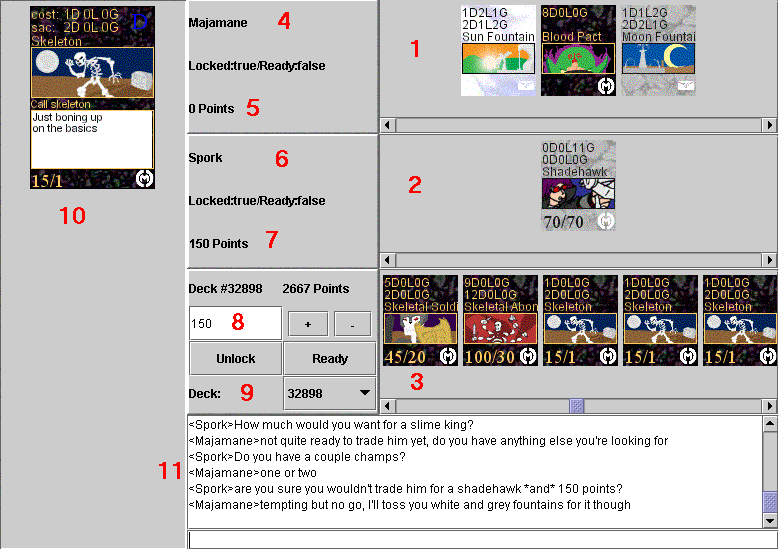
1: These are the cards your opponent is offering you.
2: These are the cards you are offering your opponent.
3: These are the cards in your current deck.
4: Your opponent information.
5: This is the amount of points your opponent is offering you.
6: Your information.
7: This is the amount of points you are offering your opponent.
8: Your point control. This lets you adjust the amount of points you're offering.
9: This displays your current deck number and lets you select other decks.
10: This enlarges the currently selected card so you can see more detail.
11: Chat.
If you want to add a card to your offering, select the appropriate deck, scroll through your deck until
you find it, and click on it. If you click on a card that you're offering, it
goes back to its original deck. To add points, type the number of points you
want to add, and hit the plus button. Hitting the minus button takes points
away. Once you hit lock, you can not change the cards or points you are
offering. If you are both locked, you can hit ready. Once you are both locked
and ready, the cards and points will be exchanged and you will both leave the
trade room. You will also have a new generic deck containing any cards you would
have received (or an empty deck if you didn't get any).
Now that you've
learned the basics, you can pickup some tips for deckbuilding here.
4. The Cards
There are five types of cards; monsters, effects,
spells, modifiers and locations.
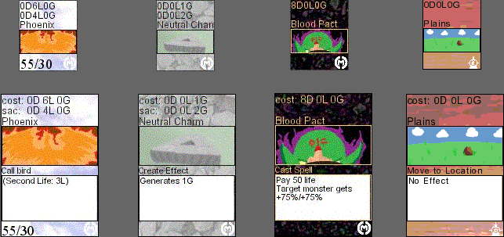
A breakdown of
the cards can be seen here:
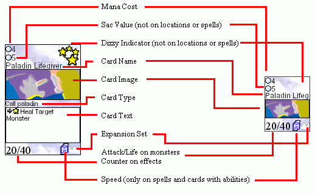
The Dizzy indicator will show a
ring of stars if the card is currently dizzy, a red cross if the card will not undizzy at it's next draw phase like normal, or both if both are true.
The mana cost shows how
expensive the card is. It is ordered in Dark mana , Light mana , and Grey
mana.
The sac value shows how much you can get for
sacrificing the card during your sacrifice phase. Spells do not stay in play and
do not have a sac value.
Certain spells and abilities affect different cards depending on their card type.
The card text will tell you the abilities an effect or monster has, and sometimes has flavor text. Spells will also be
explained here.
Expansion set tells you where the card came from. All of the
cards above are from the CMC Prime set. (View all expansions)
Attack and lifepoints are generally only on creatures. Some effects will have counters as well.
4.1. Speed
Spells and some monsters and effects will have a speed attribute. means the ability is instantaneously resolved. Other cards range from first to last.
If two cards or abilities of the same speed are played, the cards from the active player resolve first. If there's still a tie, the cards in the tie are resolved in the order they were played.
Aside from cards labeled , no spells/abilities are resolved until both players have clicked on the Ability Resolve button.
If a spell/ability no longer has a valid target when it resolves, it fizzles. You still pay the cost for it, and you lose the spell, but it has no other effect.
4.2. The Monsters
Monsters are the bread and butter of most decks. They are a reusable force that can hurt your
opponent, hurt other monsters, and protect you from your opponent's
monsters.
You can put monsters into play during your Play phase. They
generally come into play dizzy, which means
they can't attack, block, or use any of their creature abilities. Creatures with
speed
summon do not come into play dizzy.
Each monster has an attack and life. Attack determines how much damage your monster will inflict on your opponent or
any monster blocking it. Life determines how much damage your monster can take
before dying. Monsters do not heal at the end/beginning of the turn
unless the card specificly says so. Many monsters also have special abilities.
Some of the more common special abilities can be found here, in the
glossary. Other special abilities will generally be explained on the card
itself.
To use a special ability, click on the Ability button, then on the
monster. This can be done at any time. If the ability says , then using
the ability will dizzy the monster. Sometimes, mana or other costs will appear
after the , meaning that each time you use the ability, you must pay that
cost.
Monsters with abilities may also have a speed attribute.
You can have up to 5 monsters in play at a time.
4.3. The Effects
Effects are the other kind of reusable card. They
are played during your play phase, just like monsters. They can not use their
abilities when they are dizzy, just like monsters. Unlike monsters, they have no
attack or life and can not fight. Fortunately, this makes them harder to
destroy.
Unlike monsters, many effects do not come into play dizzy, even
though they are not marked as having speed summon. To determine if an effect
comes into play dizzy, you just have to test it out.
To use a special ability, click on the Ability button, then on the effect This can be done at any
time. If the ability says , then using the ability will dizzy the effect.
Sometimes, mana or other costs will appear after the , meaning that each
time you use the ability, you must pay that cost.
The most common effects are
basic mana cards, like Neutral Charms, Mana Buckets, and Dark
Obelisks.
4.4. The Spells
Unlike effects and
monsters, spells can be played at any time. Spells that can be cast will be
highlighted. To cast a spell, just click on the spell, then on the target. All
spells are described in the text of the card.
4.5. Locations
Locations are similar to effects, except there is only one location slot, and it is shared by both players. When a location is played, it automatically replaces the existing location. Locations affect both players. Locations can not be sacrificed.
4.6. Modifiers
Modifier cards are cards played during your play phase on to entities. They then show up in the "Mod" mode (click "Mods"). They are permanent - the only way to remove a Modifier is to remove the card it's attached to. Any ability of the modifier is run by the parent- this means that any ability that dizzies as a cost will dizzy the parent, not the modifier. Modifiers are not entities and cannot be seen or counted or affected by other cards in play. Allying and Power does, howver, count seperately on a modifier.
5. Playing the Game
When you first start a game, the CMC program will randomly
decide who goes first and announce which decks they are playing. Both of you
will draw 5 cards and get 1 mana of each color. The person who goes first will
not draw a card during his first draw phase. The person going second will draw a
card, but will not generate any mana on his first turn. I.E., they both start
their turn with the same amount of mana, and the second player gets an extra
card.
5.1. The Playing Field
Here is what the
playing field looks like:
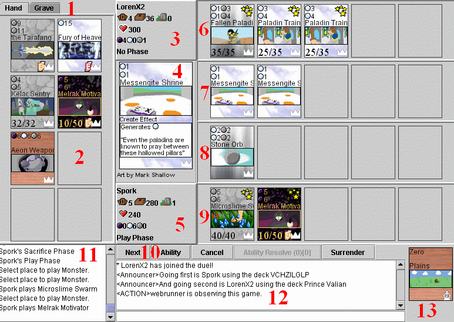
1: These tabs will let you see the cards in your hand or in your graveyard.
2: These are the cards in your hand. If the tabs were used, the cards from your graveyard would be here instead.
3: This is your opponent's information. It is also where you click if you want
to target your opponent.
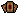: Cards in hand, 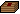: Cards in deck, 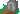: Cards in graveryard, : Life remaining, : Dark mana, Light mana, Grey mana. Some of these symbols may change as the values change.
4: Whenever a spell is cast or you put your cursor over a card, it will be enlarged here.
5: This is your information. It is also where you click to target yourself.
6: This row is where all of your opponent's monsters will be.
7: This is the row where your opponent's effects will be.
8: This is the row where your effects will be.
9: This is the row where your monsters will be.
10: All the buttons. Next takes you to the next phase. Ability lets you use the ability of a monster or effect in play. Cancel will cancel abilities, reset attackers, and undo the first click on surrender. Ability Resolve will resolve all spells abilities with a speed other than . Surrender (when clicked twice) will let you immediately lose the game. Please don't use this if the person is a turn away from winning. Just let them kill you.
11: This is the game events window. It will display all cards played, phases changed, abilities trying to resolve, the results of combat, and a myriad of other useful pieces of information.
12: This is the chat window. Enter your own chat below. There are also some chat commands.
13: This is the location slot. All games begin with a Plains in play.
5.2. The Draw Phase
This phase is entirely
automated. During this phase, you draw a card, gain 1 mana of each color, and
all of your effects and monsters undizzy. You also gain more mana for any cards
you have which generate mana.
You also lose mana for any cards with a maintenance.
If you have more than 8 cards in your hand, you will be forced to discard down
to 8.
5.3. The Sacrifice Phase
All monsters and
effects have a sac value. During your Sacrifice phase, you can double click on
any monster or effect you control. This will give you mana equal to the sac
value of that card, but will also destroy that card.
5.4. The Play Phase
During this phase, you can play monsters and
effects. Any monsters or effects that you can afford to cast will be
highlighted. Just click on the card you want to cast, and then on the open slot
you want to cast it to. Monsters go in the bottom row, and effects go into the
row above it. Most monsters and a few effects come into play dizzy and can not
block, attack, or use any abilities.
To use the ability of an undizzy
monster or effect, click on the Ability button, then on the monster or effect
you want to use. To cast a spell, just click on the spell card in your hand.
Both abilities and spells can be done at any time (this just seemed a good place
to reiterate their use).
5.5. The Attack Phase
To
attack, click on the undizzy monster you want to attack with, then either click
on your opponent or a monster. Repeat until you have assigned all the attackers
you want. Remember, you can change the target of each of your monster's attacks,
but there is currently no way to cancel attacking. You can only have one monster
block any attacker, and monsters can only block one attacker.
5.6. The Defense Phase
This phase only happens if your opponent
declared any attackers. During the Defense phase of your opponent's turn, you
are in control of the phase, meaning that the phase ends when you are
ready.
If your opponent has directly attacked one of your monsters (by
choosing your monster as the target of his attack), then both monsters will be
highlighted in the same color. A monster being directly attacked must block that
attacking monster and no others, unless the attacking monster is removed from
combat. Any monsters that are not dizzy and are not being directly attacked can
choose to block any monsters that are not directly attacking a
monster.
Example: Webrunner has two Winged Demons (50/35) and an NPC
(0/10). I have a Brick Wall (0/60) and a Stone Golem (45/45). Webrunner has the
NPC directly attack my Brick Wall, and attacks me with both of the Winged
Demons. I can not choose to block either of the Winged Demons with my Brick
Wall, because it is blocking the NPC. My Stone Golem can choose to block either
of the Winged Demons, since their attack targets me. However, it can not block
the NPC. If I cast a spell to destroy or dizzy the NPC, then my wall could block
a Winged Demon.
If your monster attacks your opponent and is not
blocked, it will deal damage equal to its attack power to your opponent. If your
monster attacks your opponent and is blocked, half the damage beyond what
is needed to kill the monster will damage your opponent. Monsters that directly
attack other monsters will never deal overflow damage.
Example: In the example above, I choose to block one of the Winged Demons with my Stone Golem.
The first Winged Demon will deal 50 damage to me. The second will deal 50 damage
to my Stone Golem; 5 more than enough to kill it, so I will take an extra 2
damage. Fortunately, my Stone Golem will deal 45 damage to the Winged Demon and
kill it. Because my Stone Golem is defending, the overflow damage is
meaningless. I will take a total of 52 damage this round.
5.7. The Attack Resolution
This phase will happen
reguardless of whether or not your opponent attacked. During the Attack
Resolution phase of your opponent's turn, you are in control of the phase,
meaning that the phase ends when you are ready.
The Attack Resolution
phase is basicly a last chance for you to use your monsters' and effects'
abilities before they undizzy in your draw phase.
6. Victory
There are four ways to win a game: You can beat your
opponent's life to 0 or below; Your opponent can be forced to draw from a
depleted deck; Your opponent can surrender; You can play a card which has a special win condition; Finally,
your opponent can time out/disconnect.
It's customary to say "Good Game"
before dealing the final blow or drawing the last card or such.
When the
game ends, you will be taken to a splash screen which will display who won as
well as Whenever you win a game, you get a number of points equal to:
200 +
(Opponent's Wins) + (Opponent's Losses)/5
To a maximum of 400 points.
When
you lose, you gain about half the points:
50 + (Opponent's Wins)/2 +
(Opponent's Losses)/10
To a maximum of 200 points.
A note on "decking": It's common to think of Decking as running out of cards. This, however, is false. Decking occurs when you try to draw from an empty deck, not if your empty deck is being drawn from. This distinction is now important with the advent of cards that can draw from your opponent's deck.
7. Chat Commands
While in the game, there are a few special
commands you can type.
/me: Emotes. So typing "/me is the greatest
player ever." would display "HailSpork is the greatest player
ever."
/surrender: You lose the game. Please don't type this if the
person is a turn away from winning. Just let them kill
you.
/loadfix: If the cards don't load right for some reason, try this.
/invisible: If you type this, you will tell your opponent that
you want to make the game invisible. If your opponent also types this, then your
game will no longer be open for observation.
/visible: If your game is
invisible and you type this, your game will once again be open for
observation.
8. Avatars
CMC allows a user to customize an avatar image out of buildable parts. If your avatar is blank, then you need to build your base avatar. Simply go to the avatar page to do so. Once your base avatar data is created, click the bottom link on the avatar page to build your .PNG file. The avatar system works by building a full png file from your data, and you choose your data. You can get avatar parts in several ways. The most common is to buy them from the individual avatar part stores. NOTE: AT THIS TIME YOU CANNOT SELL AVATAR PARTS. Each part costs a certian amount of points, and you only ever have to buy a certian part once. If you try to buy a part you already have you will not be able to buy it. Avatar parts can be included in Vouchers as well, but they will not indicate if an avatar part actually is included: you will have to check your avatar part sections to see.
Please note, Java doesn't 'refresh' images very quickly, so you may not see avatar changes immediately. Also note, that your avatar hasn't yet changed until you rebuild your avatar file at the bottom of the avatar page.
9. Glossary
The following is a list of terms you will commonly see on cards, along with their explanations.
:
This represents a card ability. Click on the ability button, then on this card
to use. can not be used while the card is dizzy.
: This is a card ability that dizzies the card when used.
x: This denotes a cost of X Light mana.
x: This denotes a cost of X Dark mana.
x: This denotes a cost of X Grey mana.
Dizzy: Dizzy cards have a ring of stars in the upper-right corner.
They can not block, attack, or use abilities.
Fleeting: Cards with fleeting will be destroyed at the
beginning of your turn.
Entity: Refers to either a Monster or an Effect, but not a Modifier.
Generate: Cards with
generation provide something (usually mana) at the beginning of your turn.
Heal: Heal removes the most recent (and only the most
recent) damage dealt to the target monster.
Invisible attack: Invisible monsters can only be blocked by invisible monsters.
Maintenance: A cost that you pay at the beginning of
your turn. This is not voluntary. If the cost is not payed the entity is destroyed.
Merge: or Merging: When targeting a certain other card (should be listed after this ability), they form
a new card with stats which may be based on the original two cards.
Obliterate: Target card is removed from the game
without triggering on-death abilities and without putting it into the graveyard.
(Color) Damage: X%: This
monster takes X% against monsters of the chosen color when blocking or
attacking. Multicolor monsters always assume the highest damage.
Example: A creature with "D Damage: 50%" would take
half damage whe attacking a Dark
monster. If it had
"D Damage: 0%", it
would take no damage blocking
a Dark
monster.
Second Life: This card goes back to
your hand when destroyed. Some cards will list a cost to pay for this ability,
which is not voluntary.
Sneaking (color): This
monster may not be blocked by monsters of the chosen color.
Speed Summon: This card does not come into play dizzy.
Touch of Death X%: This monster will destroy any monster it damages in combat X% of the time
Decoying: If there is a monster with Decoying in play, a monster without Decoying cannot be targeted by spells or abilities.
Quick Hit: When attacking, this monster will avoid damage if it kills the other monster and the other monster doesn't have Quick Hit.
Entrenching: Cannot be directly attacked.
Lifebar: Any hitpoint changes to this monster (including damage, gains, etc) are reduced to one, simulating an old-school game lifebar.
Provides X Power: This card gives you X power, used by cards that require power.
Requires X Power: or If you do not have X Power Checks whether you control cards which have that amount total power or more.
Allying X: Essentially, replace with "This card has Allying. If you control X cards with allying (including Location and Modifiers):"
Face Down: A card that is face down is subject to special rules. 1) The card shows as a card back to your opponent. 2) No info on the card is provided to the opponent, not even name. 3) If you have one in play, your mana is estimated as the maximum amount it can be (ie: any mana costs and mana changes are refelcted, but mana used to pay for face down cards is not).
Unique: You can only have 1 of this card in play at
any time. Unique does not count as a monster type.
9.1 Status Symbols
From time to time, a card may have one or more small symbols in the upper left of it's portrait while in play. These are status effects, and are gained/removed for various reasons.
- Token. This entity is a token entity, and has no 'physical' card associated with it. It cannot be returned to hand, and certian abilities (such as ones that trigger on card death) do not work with it.
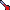 - Damaged. This monster can be healed.
 - Glue Effect. The next time the manual ability of this monster is used, the monster dizzies and the ability fails.
- Glue Effect. The next time the manual ability of this monster is used, the monster dizzies and the ability fails.
- Special Khrima Effect. Only on War of the Webcomics classic Khrima. Indicates that his ability has yet to be used this turn, and therefore Khrima cannot yet attack.
- Year Two Cake Effect. Monster has a constant attack bonus of your hand size-opponent hand size. Monster gains life until end of turn at draw phase equal to your total mana minus your opponents total mana. During your opponent's draw phase, if ((your grave % your decksize) / their grave) >= ((their grave % their decksize) / your grave), then the monster undizzies.
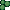 - Poison. Takes 10 damage every turn, for one turn.
- Poison x5. Takes 10 damage every turn, for five turns.
 - Prevent damage. The next X damage (or the next single amount of damage) to this monster is prevented. (possibly until end of turn)
- Prevent damage. The next X damage (or the next single amount of damage) to this monster is prevented. (possibly until end of turn)
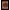 - Face down. Card cannot be seen by your opponent.
- Counter. Used to add extras to a card.
 - 5 Counters.
- 5 Counters.
- Quick Hit.
- Entrenching
- Invisible Attack
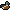 - Decoying
 - Spell Immune
- Spell Immune
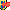 - Ability Immune
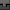 - Card has a modifier attached to it.
- Card was given Fleeting externally
 - Card was given second life externally.
- Card was given second life externally.
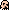 - Unstable. Card will take 10 damage every time it is dizzied..
- Spiked. This card will not perform any automatic abilities, activated abilities, triggers, or constant modifiers until the next sacrifice phase.
Well, those are the rules. They make alot more sense once you
try it a few times. If you want some more advice, you can ask in the chat room,
go to the forum, or check
out the Newbies' Guide to
Deckbuilding.
In case you missed it, here is a link to the
Quick-Start for Magic Players
Good luck!
-HailSpork + webrunner